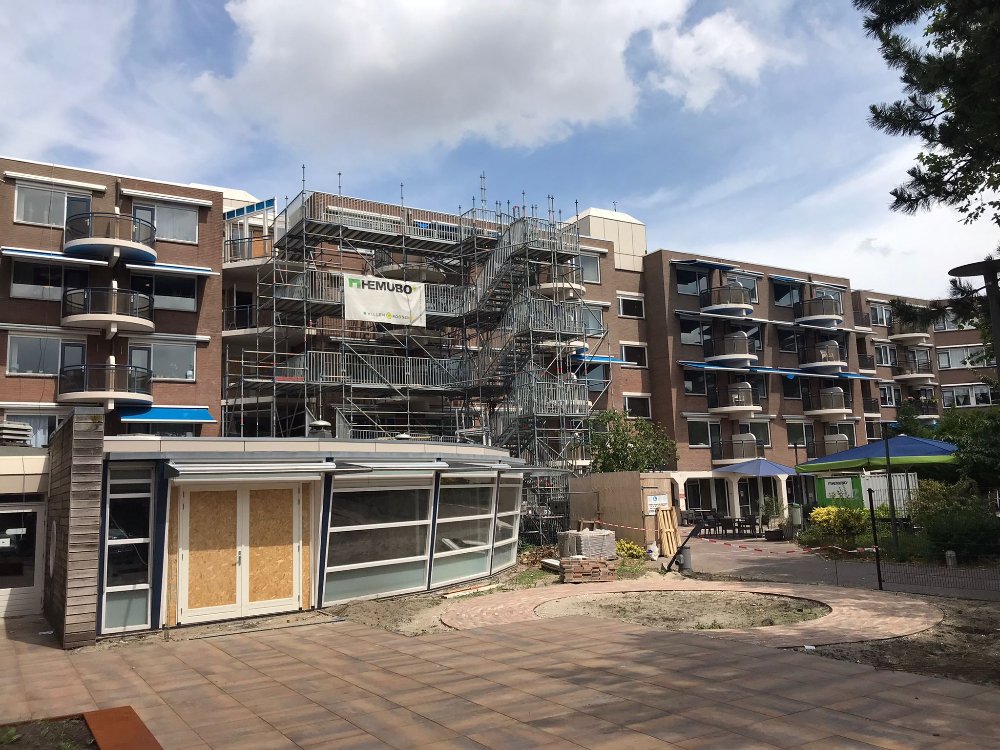
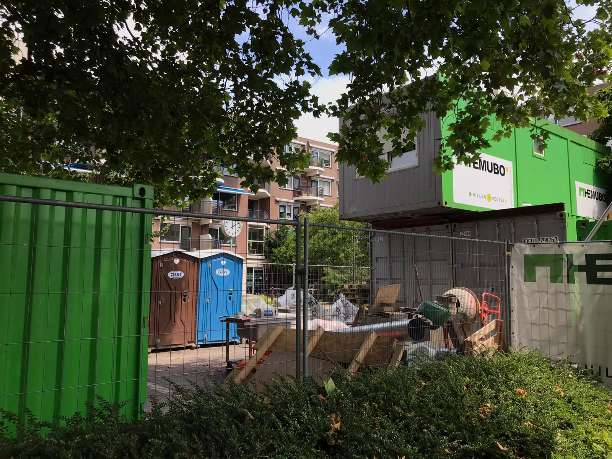
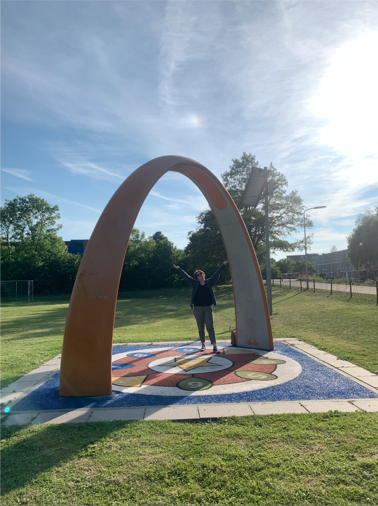
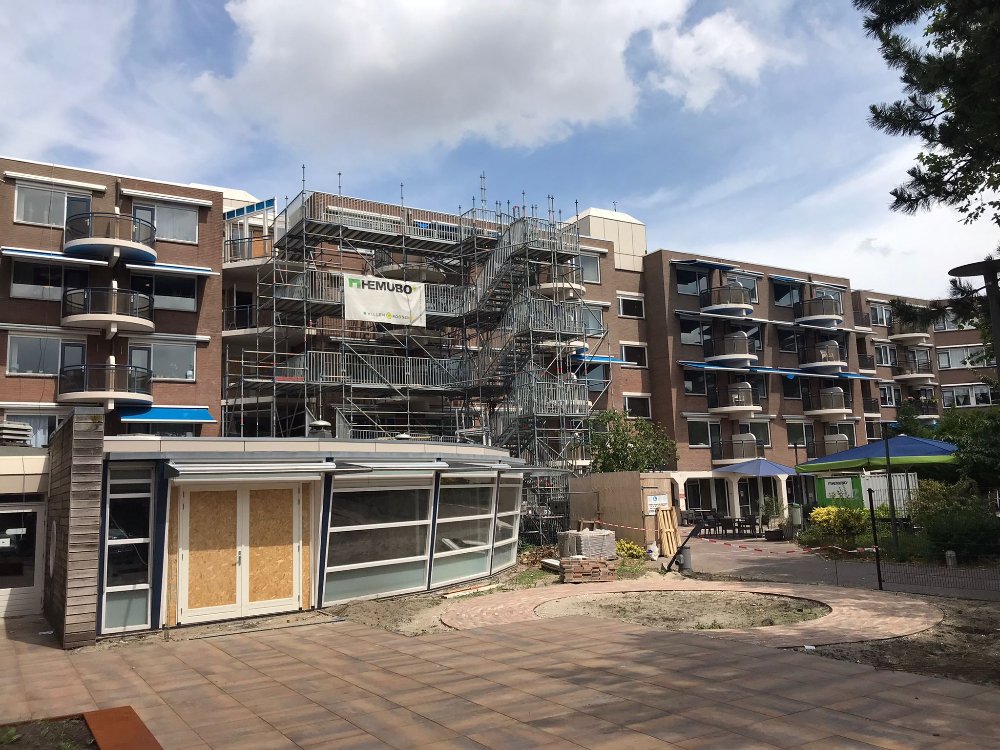
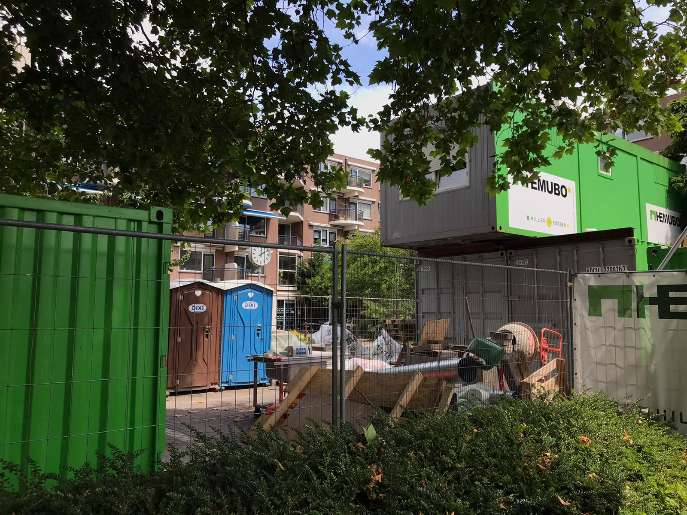
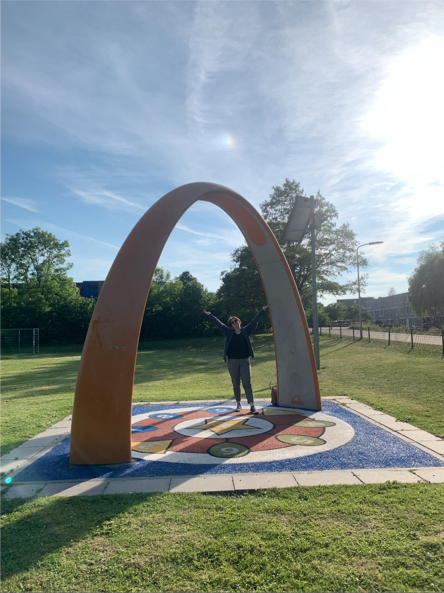
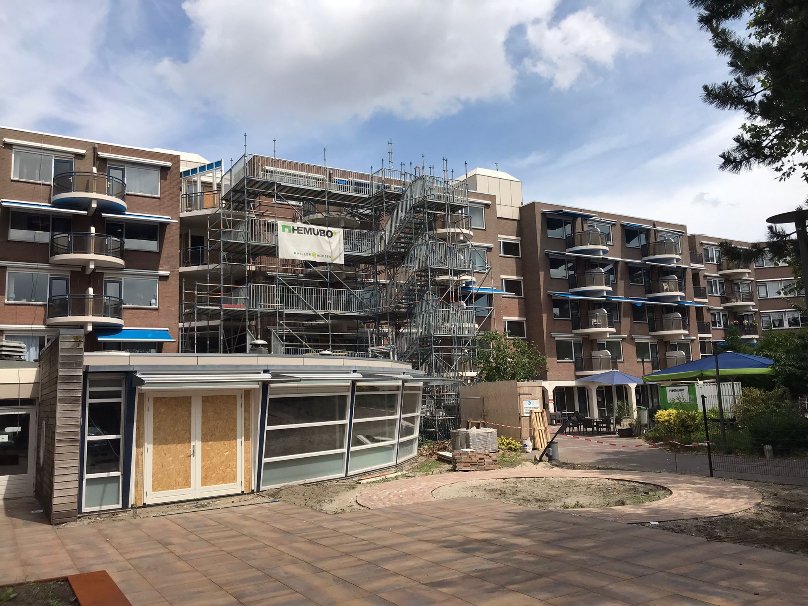
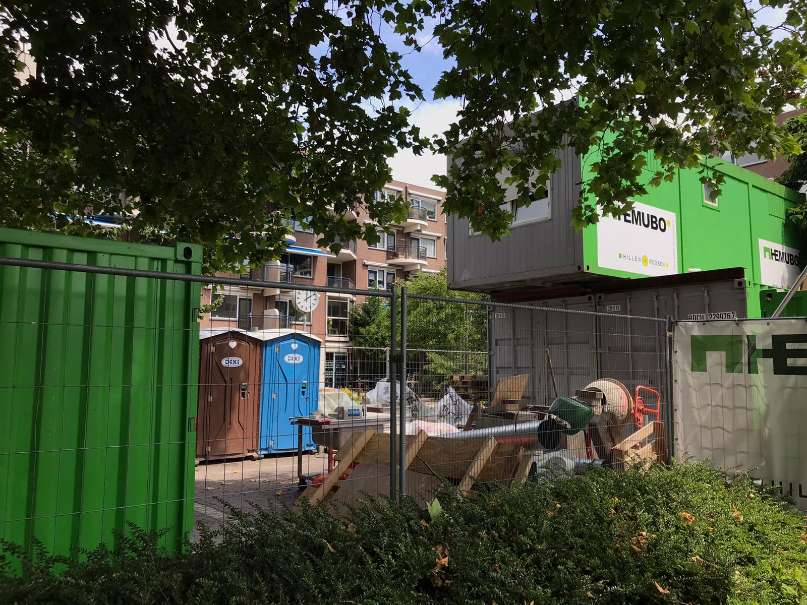
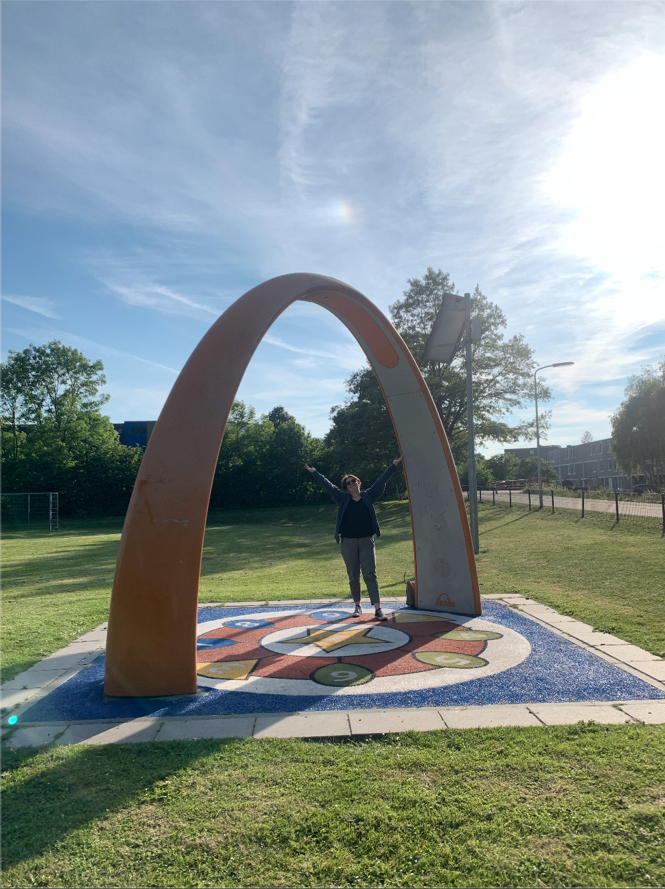

Tijdens het uitzoeken van een excursie vond ik het moeilijk om te kiezen aangezien ik echt dol ben op het bezoeken van musea.
Echter toen ik eenmaal had gegoogled naar de Yalp installaties leek het mij leuk om dit in het echt te gaan ontdekken.
Dit aangezien ik mij kan herinneren dat ik jaren geleden meerdere van hen installaties in de buurt van mijn ouders huis heb gezien.
Ik heb op de website gekeken naar diverse installaties en gekeken waar deze zich bevinden.
Het bleek dat er twee installaties en een beweegtuin vlakbij het huis van mijn ouders stonden en dat deze tussen het bejaardentehuis / verzorgingstehuis en een
kinderopvang / crèche stonden. Ik vind dit een interessante plek waardoor ik extra enthousiast was om de installatie te bezoeken.
Zoals je hierboven meerdere keren heb kunnen lezen staat er overal stonden, dit komt omdat alle installaties verwijderd waren!
 
Omdat mijn ouders huis een stukje van mijn huis vandaan is, besloot ik om naar huis te gaan en thuis naar andere installaties te zoeken en een nieuwe excursie in
te plannen. ‘S avonds liet mijn moeder weten dat de Yalp boog was verhuisd en dat zij wist waar deze ongeveer moest staan.
Uiteindelijk heb ik de Yalp boog gevonden, in een grasveld waar ook een kabelbaan en twee goaltjes stonden.
Persoonlijk begrijp ik de locatie omdat het een soort van speeltuin is maar vind ik dit een minder interessante locatie dan de oude
locatie. Dit aangezien de nieuwe locatie zich aan een stil fietspad bevindt. Ook vind ik het echt jammer dat de twee installaties en
de beweegtuin nu geen geheel meer zijn voor de community die daar beweging en verbinding zou kunnen vinden.

Wat is het doel van deze installatie?
Het hoofddoel van de installatie is het stimuleren van buitenspelen en bewegen voor iedereen.
Hoe werkt het?
De Sona draait voornamelijk op zonne energie met een zonnepaneel bovenop de boog. Aan de binnenkant van de boog zit een camera
welke de interactie van de participerende opvangt en hierop anticipeert. Aan één zijkant van de boog zit een beginknop
waarmee een spel kan worden gestart. Verder zitten er speakers aan beide kanten van de Sona.
De Sona bevat speel, dans, ren of geheugenspellen welke steeds moeilijker worden door de opbouw in levels.
Het is mogelijk om met grote groepen deel te nemen en de de vloer is vrij toegankelijk wat inhoud dat iedereen zich op de
vloer kan bevinden, dus ook als je een rolstoel, rollator, etc hebt. Hierdoor stimuleert Sona actief buitenspelen voor
werkelijk iedereen.
De Yalp Sona kan ingezet worden voor recreatieve doeleinden. Zo is het mogelijk om met veel mensen te spelen en is het een interessant
punt voor bezoekers om terug te komen waardoor omzet voor omliggende terrassen kan stijgen.
Ook biedt de Sona een sociale en fysieke bezigheid voor ouderen wat voor hen niet alleen een positief fysiek maar ook mentaal kan helpen
aangezien samenspel centraal staat.
Bovengenoemd samenspel is ook gunstig in openbare ruimtes aangezien de installatie gebruikt kan worden als sociale ontmoetingsplek waar
zowel jongeren als ouderen met elkaar kunnen spelen. Samen bewegen verhoogt de groepsverbondenheid en geeft de buurt de optie om te
bewegen zonder lid te hoeven worden van een sportclub.
Tot slot kan de Sona ingezet worden op scholen, voornamelijk op het basisonderwijs van groep 1 tot en met 8.
De boog is een echte eyecatcher door de kleuren en de geluiden, wat interesse wekt en spel stimuleert.
Online kan de eigenaar van de desbetreffende Sona bepalen welke spellen worden ingezet en hoe hard het geluid staat.
Hierdoor is het dus mogelijk om de Sona aan te passen aan de doelgroep waar deze voor is geplaatst.
Wat spreekt mij zo aan binnen deze installatie?
Wat mij zo aanspreekt binnen deze installatie is dat het zo positief en inclusief is.
Ik vind het in het algemeen een super slim concept. Er is weinig stroom nodig omdat de installatie voornamelijk draait op
zonne energie wat het geheel, als ik het goed begrijp, een milieuvriendelijk concept maakt. Verder vind ik het echt
fantastisch vind dat de Sona voor iedereen beschikbaar is om mee te spelen en ik denk dat het slim is om de installatie
in verschillende plaatsen te plaatsen om spel en verbinding te stimuleren.
 Zoals je hierboven meerdere keren heb kunnen lezen staat er overal stonden, dit komt omdat alle installaties verwijderd waren!
 
Omdat mijn ouders huis een stukje van mijn huis vandaan is, besloot ik om naar huis te gaan en thuis naar andere installaties te zoeken en een nieuwe excursie in
te plannen. ‘S avonds liet mijn moeder weten dat de Yalp boog was verhuisd en dat zij wist waar deze ongeveer moest staan.
Uiteindelijk heb ik de Yalp boog gevonden, in een grasveld waar ook een kabelbaan en twee goaltjes stonden.
Persoonlijk begrijp ik de locatie omdat het een soort van speeltuin is maar vind ik dit een minder interessante locatie dan de oude
locatie. Dit aangezien de nieuwe locatie zich aan een stil fietspad bevindt. Ook vind ik het echt jammer dat de twee installaties en
de beweegtuin nu geen geheel meer zijn voor de community die daar beweging en verbinding zou kunnen vinden.

Zoals je hierboven meerdere keren heb kunnen lezen staat er overal stonden, dit komt omdat alle installaties verwijderd waren!
 
Omdat mijn ouders huis een stukje van mijn huis vandaan is, besloot ik om naar huis te gaan en thuis naar andere installaties te zoeken en een nieuwe excursie in
te plannen. ‘S avonds liet mijn moeder weten dat de Yalp boog was verhuisd en dat zij wist waar deze ongeveer moest staan.
Uiteindelijk heb ik de Yalp boog gevonden, in een grasveld waar ook een kabelbaan en twee goaltjes stonden.
Persoonlijk begrijp ik de locatie omdat het een soort van speeltuin is maar vind ik dit een minder interessante locatie dan de oude
locatie. Dit aangezien de nieuwe locatie zich aan een stil fietspad bevindt. Ook vind ik het echt jammer dat de twee installaties en
de beweegtuin nu geen geheel meer zijn voor de community die daar beweging en verbinding zou kunnen vinden.
